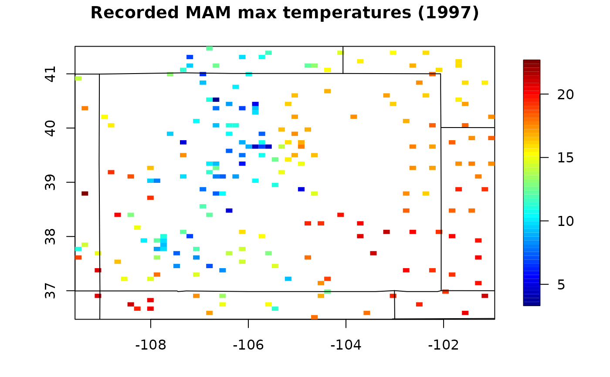
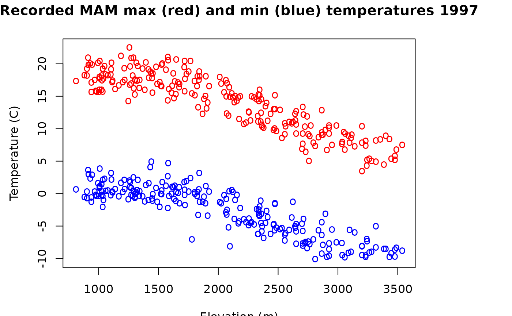

CO.RdSource: These is a group of R data sets for monthly min/max temperatures and precipitation over the period 1895-1997. It is a subset extracted from the more extensive US data record. Temperature is in degrees C and precipitation is total monthly accumulation in millimeters. Note that minimum (maximum) monthly tempertuare is the mean of the daily minimum (maximum) temperatures.
Data domain:
A rectagular lon/lat region [-109.5,-101]x [36.5,41.5] larger than the boundary of Colorado comprises approximately 400 stations. Although there are additional stations reported in this domain, stations that only report preicipitation or only report temperatures have been excluded. In addition stations that have mismatches between locations and elevations from the two meta data files have also been excluded. The net result is 367 stations that have colocated temperatures and precipitation.
This group of data sets is organized with the following objects:
A data frame with columns: station id, elev, lon, lat, station name
elevation in meters
An image object being elevation in meters on a 4 km grid covering Colorado.
alphanumeric station id codes
locations in lon/lat
Just the grid.list used in the CO.elevGrid.
Monthly means as three dimensional arrays ( Year, Month, Station). Temperature is in degrees C and precipitation in total monthly accumulation in millimeters.
Spring seasonal means (March, April,May) as two dimensional arrays (Year, Station).
Spring seasonal means (March, April,May) means by station for the period 1960-1990. If less than 15 years are present over this period an NA is recorded. No detreding or other adjustments have been made for these mean estimates.
Here is the precise R script used to create this data subset from the larger US monthly data set. This parent, R binary file can be obtained by contacting Doug Nychka (nychka@mines.edu).
These technical details are not needed for casual use of the data -- skip down to examples for some R code that summarizes these data.
attach("RData.USmonthlyMet.bin")
#To find a subset that covers Colorado (with a bit extra):
indt<- UStinfo$lon< -101 & UStinfo$lon > -109.5
indt<- indt & UStinfo$lat<41.5 & UStinfo$lat>36.5
# check US(); points( UStinfo[indt,3:4])
#find common names restricting choices to the temperature names
tn<- match( UStinfo$station.id, USpinfo$station.id)
indt<- !is.na(tn) & indt
# compare metadata locations and elevations.
# initial matches to precip stations
CO.id<- UStinfo[indt,1]
CO.names<- as.character(UStinfo[indt,5])
pn<- match( CO.id, USpinfo$station.id)
loc1<- cbind( UStinfo$lon[indt], UStinfo$lat[indt], UStinfo$elev[indt])
loc2<- cbind( USpinfo$lon[pn], USpinfo$lat[pn], USpinfo$elev[pn])
abs(loc1- loc2) -> temp
indbad<- temp[,1] > .02 | temp[,2]> .02 | temp[,3] > 100
# tolerance at 100 meters set mainly to include the CLIMAX station
# a high altitude station.
data.frame(CO.names[ indbad], loc1[indbad,], loc2[indbad,], temp[indbad,] )
# CO.names.indbad. X1 X2 X3 X1.1 X2.1 X3.1 X1.2 X2.2 X3.2
#1 ALTENBERN -108.38 39.50 1734 -108.53 39.58 2074 0.15 0.08 340
#2 CAMPO 7 S -102.57 37.02 1311 -102.68 37.08 1312 0.11 0.06 1
#3 FLAGLER 2 NW -103.08 39.32 1519 -103.07 39.28 1525 0.01 0.04 6
#4 GATEWAY 1 SE -108.98 38.68 1391 -108.93 38.70 1495 0.05 0.02 104
#5 IDALIA -102.27 39.77 1211 -102.28 39.70 1208 0.01 0.07 3
#6 KARVAL -103.53 38.73 1549 -103.52 38.80 1559 0.01 0.07 10
#7 NEW RAYMER -103.85 40.60 1458 -103.83 40.58 1510 0.02 0.02 52
# modify the indt list to exclude these mismatches (there are 7 here)
badones<- match( CO.id[indbad], UStinfo$station.id)
indt[ badones] <- FALSE
###### now have working set of CO stations have both temp and precip
##### and are reasonably close to each other.
N<- sum( indt)
# put data in time series order instead of table of year by month.
CO.tmax<- UStmax[,,indt]
CO.tmin<- UStmin[,,indt]
CO.id<- as.character(UStinfo[indt,1])
CO.elev<- UStinfo[indt,2]
CO.loc <- UStinfo[indt,3:4]
CO.names<- as.character(UStinfo[indt,5])
CO.years<- 1895:1997
# now find precip stations that match temp stations
pn<- match( CO.id, USpinfo$station.id)
# number of orphans
sum( is.na( pn))
pn<- pn[ !is.na( pn)]
CO.ppt<- USppt[,,pn]
# checks --- all should zero
ind<- match( CO.id[45], USpinfo$station.id)
mean( abs( c(USppt[,,ind]) - c(CO.ppt[,,45]) ) , na.rm=TRUE)
ind<- match( CO.id[45], UStinfo$station.id)
mean( abs(c((UStmax[,,ind])) - c(CO.tmax[,,45])), na.rm=TRUE)
mean( abs(c((UStmin[,,ind])) - c(CO.tmin[,,45])), na.rm=TRUE)
# check order
ind<- match( CO.id, USpinfo$station.id)
sum( CO.id != USpinfo$station.id[ind])
ind<- match( CO.id, UStinfo$station.id)
sum( CO.id != UStinfo$station.id[ind])
# (3 4 5) (6 7 8) (9 10 11) (12 1 2)
N<- ncol( CO.tmax)
CO.tmax.MAM<- apply( CO.tmax[,3:5,],c(1,3), "mean")
CO.tmin.MAM<- apply( CO.tmin[,3:5,],c(1,3), "mean")
CO.ppt.MAM<- apply( CO.ppt[,3:5,],c(1,3), "sum")
# Now average over 1961-1990
ind<- CO.years>=1960 & CO.years < 1990
temp<- stats( CO.tmax.MAM[ind,])
CO.tmax.MAM.climate<- ifelse( temp[1,] >= 15, temp[2,], NA)
temp<- stats( CO.tmin.MAM[ind,])
CO.tmin.MAM.climate<- ifelse( temp[1,] >= 15, temp[2,], NA)
CO.tmean.MAM.climate<- (CO.tmin.MAM.climate + CO.tmin.MAM.climate)/2
temp<- stats( CO.ppt.MAM[ind,])
CO.ppt.MAM.climate<- ifelse( temp[1,] >= 15, temp[2,], NA)
save( list=c( "CO.tmax", "CO.tmin", "CO.ppt",
"CO.id", "CO.loc","CO.years",
"CO.names","CO.elev",
"CO.tmin.MAM", "CO.tmax.MAM", "CO.ppt.MAM",
"CO.tmin.MAM.climate", "CO.tmax.MAM.climate",
"CO.ppt.MAM.climate", "CO.tmean.MAM.climate"),
file="COmonthlyMet.rda")
data(COmonthlyMet)
#Spatial plot of 1997 Spring average daily maximum temps
quilt.plot( CO.loc,CO.tmax.MAM[103,] )
US( add=TRUE)
title( "Recorded MAM max temperatures (1997)")

# min and max temperatures against elevation
matplot( CO.elev, cbind( CO.tmax.MAM[103,], CO.tmin.MAM[103,]),
pch="o", type="p",
col=c("red", "blue"), xlab="Elevation (m)", ylab="Temperature (C)")
title("Recorded MAM max (red) and min (blue) temperatures 1997")

#Fitting a spatial model:
obj<- Tps(CO.loc,CO.tmax.MAM.climate, Z= CO.elev )
if (FALSE) {
out<- spatialProcess(CO.loc,CO.tmax.MAM.climate,
smoothness=1.0, Z= CO.elev)
surface( out)
}